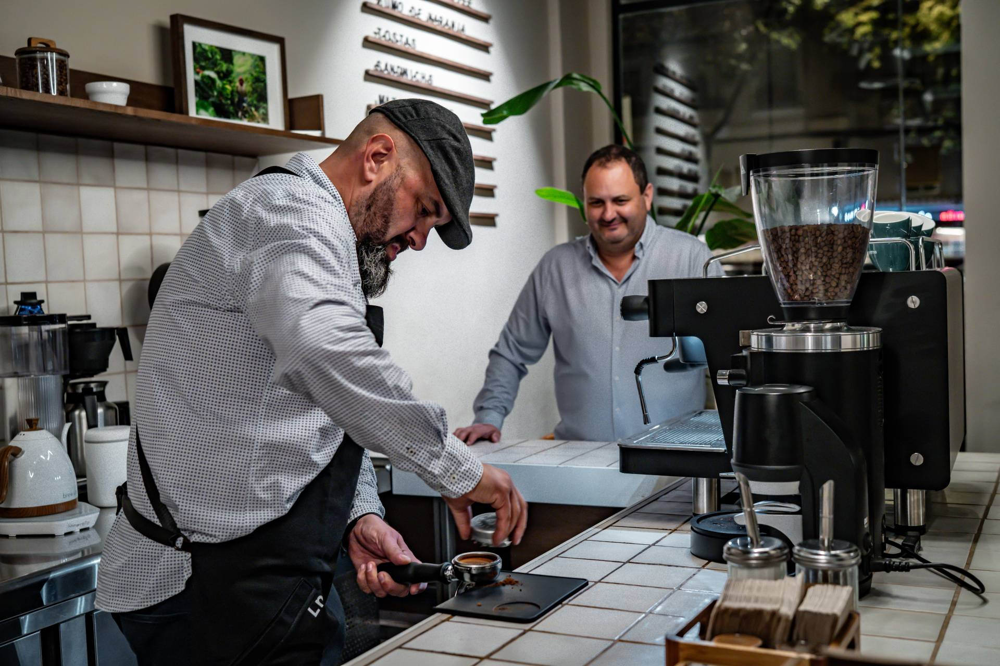

En La Norma diseñamos máquinas de café que entienden a quienes están detrás de la barra.
Nacimos en Valencia con una idea clara: combinar precisión, diseño y durabilidad para crear herramientas que acompañen el día a día de baristas, tostadores y amantes del café profesional. Cada máquina que fabricamos es el resultado de años de experiencia, escucha activa y pasión por el detalle. Por eso creamos soluciones técnicas que respetan el trabajo de quienes están detrás de la barra.
Nuestros pilares
Por técnicos
No somos una marca pensada desde el marketing. Somos ingenieros, diseñadores industriales y técnicos que han vivido el café desde dentro. Por eso nuestras máquinas no solo funcionan: entienden el ritmo real de una barra.
Para baristas
Cada botón, cada detalle, cada curva tiene una razón. Observamos cómo trabajan los baristas, qué necesitan y qué no… y lo transformamos en soluciones que mejoran su día a día.
Para durar
No creemos en la obsolescencia. Fabricamos máquinas robustas, accesibles y reparables, pensadas para mantenerse en forma muchos años. Porque lo sostenible no solo es ecológico, también es técnico.
Herramientas para quienes toman el café en serio
- Cafeterías que buscan diferenciarse
- Baristas que quieren precisión real
- Tostadores que entienden el valor del detalle
- Microcafés con espacio limitado
- Amantes del café que exigen nivel profesional en casa